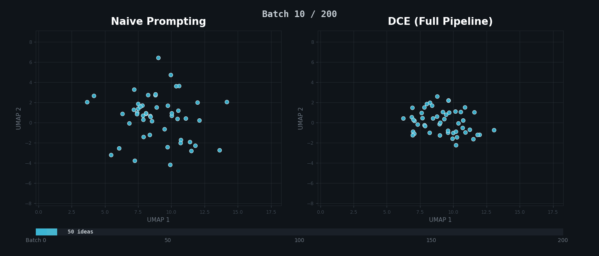
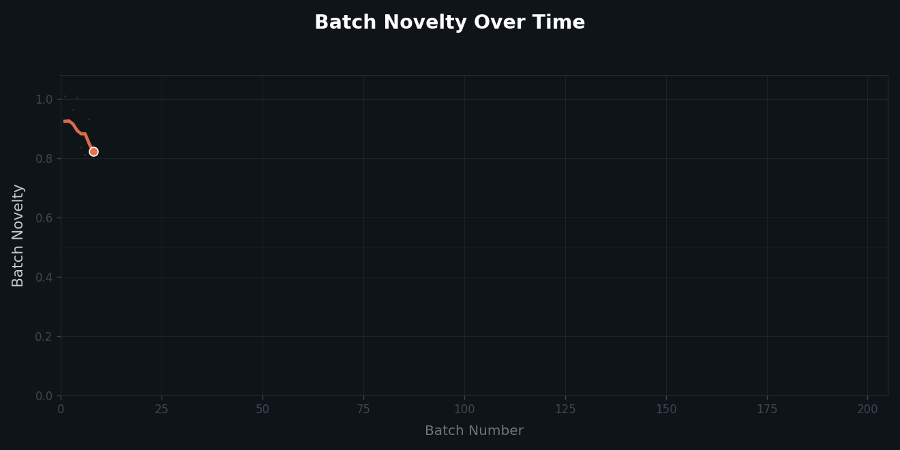

Prompt an LLM to generate five ideas. Clear the conversation. Repeat 200 times. You'd expect 1,000 distinct ideas. You won't get them. By batch 50, the same concepts resurface with cosmetic variation. By batch 200, over a third of the output is redundant. "Smart water bottle" rephrased twenty different ways.
We call this cross-batch mode collapse. Each API call starts with a blank context window. The model has no memory of what it already said, so it keeps returning to the same high-probability outputs. You're paying for 1,000 ideas but getting 50 ideas on repeat.


DCE gives the model something it normally lacks: a memory of everything it has already generated, and a prompt that adapts based on what's missing. Three mechanisms work together each batch:
Verbalized tail sampling asks the model to rate how obvious each idea is. "Smart water bottle" scores 0.45. Too predictable, rejected. "Shipping containers with walls of compressed agricultural waste that decompose into fertilizer" scores 0.03. Kept.
Semantic memory embeds every accepted idea into a vector database. Before a new idea is accepted, the system checks: has something like this been said before? "Intelligent hydration vessel" has different words than "smart water bottle" but nearly identical meaning. The memory catches both.
Adaptive prompt evolution rewrites the generation prompt every batch. Early on, it explores broadly. Later, it identifies which categories are thin: "only 2 ideas about thermal regulation, 3 about ocean-degradable materials." It steers the model toward the gaps. By batch 190, the prompt tracks 47 categories and flags 3 dense regions to avoid.
Across three domains, two model families, and three random seeds: DCE achieves 0.0% collapse versus 5.6% for naive prompting. It consistently produces 17–18 distinct concept clusters, while naive prompting fluctuates wildly between 2 and 17. No single component is enough. Deduplication alone doesn't prevent the model from generating the same ideas; prompt evolution alone doesn't catch the near-duplicates that slip through. They have to work together.
The cost: roughly $0.50 per 1,000 candidates, using only standard API calls. No fine-tuning. No custom architectures. Just a smarter prompt loop.
@article{lingo2026dynamic,
title={Dynamic Context Evolution for Scalable Synthetic Data Generation},
author={Lingo, Ryan and Chhajer, Rajeev},
journal={arXiv preprint arXiv:XXXX.XXXXX},
year={2026}
}